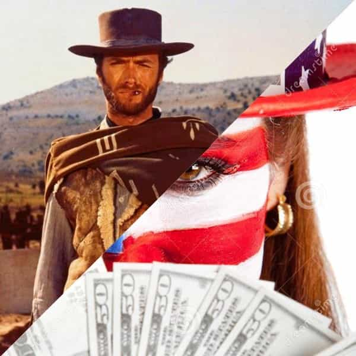

André is a young European who left his decaying country in 2012 for greener pastures. He enjoys exploring subterranean places, reading about a host of interconnected topics, and yearns for Tradition.


Conservatives have from time to time upheld what they consider a distinctly American identity. The Founding Fathers with two capital Fs, the Constitution, an inalienable and unconditional set of “rights”, and classical liberalism. All this comes in mind when one thinks about what conservatism proclaimed to be.
This stance appears in a work like Charles Murray’s Coming Apart, which opposes an “American model” of industriousness, self-responsibility, and pride in excellent work to a “European model” consisting of welfare State, cravings for job security, and general opposition to work (see chapters 9 and 17). In less intellectual terms I also remember the ridiculous “freedom fries” fad, because lee-bur-ty and patriotism mean doing the Deep State’s bidding based on lies, y’know?
The big alt tent, although rife with different political ideas, has constantly striven to escape from this stance. Many oppose big banks and big corporations, who destroy the possibility of a small-scale entrepreneurism and exert an unchecked power over pop culture. Some on the Alt-Right openly oppose shadowy capitalists, to the extent of proposing the nationalization of SJW-managed companies like Twitter, an idea no conservative could have had ten years ago.
Some on ROK consider that “rights” are a convenient myth, a modern invention—a position I agree with. Clearly, we have been more culturally efficient than cucks who quote Russell Kirk while worshipping Martin Luther King with years of delay. But precisely because of this, both sides of the one party in power, the strong Democrat and the weak Republican, have accused the alt-sphere of being “un-American.”
Is being “American” an idea? A mindset? In other words, would there be an “American spirit” that both faces of the Current Year partake but that we would not—regardless of our passports?

To a European, two pictures of America have coexisted. One was of historical pioneers, of endless opportunities, of cow-boys, of superheroes. The other was of the uneducated, rude, imperialist Yankees, obsessed with money but somehow clever and sassy. These apparently conflicting pictures have often fused or overlapped. Both are superficial and, to some extent, true—at least historically.
To get a deeper portrayal, I will borrow from Murray’s aforementioned work. According to his interpretation of American history, the United States have been based on the following virtues since their foundation:
1. Industriousness. Willing to work, cheerfully looking for opportunities and seizing them, generations of Americans would have been enthusiastic defenders of a classically liberal civilization:
To them, industry signified a cluster of qualities that had motivated the Revolution in the first place—a desire not just to be free to speak one’s mind, to practice religion as one saw fit, and to be taxed only with representation, but the bone-deep American assumption that life is to be spent getting ahead through hard work. (Coming Apart, chap.6)
2. Honesty. Americans would have known that only a honest, trustworthy people could live without needing an authoritarian government. Dishonest, unvirtuous men would call for armed forces looming over everyone, whereas people who respect the law and tell the truth would be able to govern themselves with only a minimal State beyond. O, the land of the free…
3. Marriage. Echoing the Scottish philosopher David Hume, founding fathers such as James Wilson and John Adams have insisted on how the “sacred bands of marriage” were essential for society and how marital fidelity was conducive to “peace and harmony.” Murray stresses the degree at which a distinctly American morality made marriage a more demanding, and consequently less scandalous, institution than in Europe.
4. Religiosity. Here Murray highlights the necessary social role of religion. From Adams to Jefferson, the founders allowed themselves to disagree on particular dogmas but all agreed that religion was essential to maintain morality and keep the passions in check. “Avarice, ambition, revenge, or gallantry, would break the strongest cords of our Constitution as a [land?] whale goes through a net”, Adams wrote.
John Adams would not have been pleased
Although Murray’s list of essential “American” virtues likely holds its share of truth, it also strikes me as highly idealistic, confusing the wishes of the founding fathers with historical reality. He also seems unaware of how calculative and utilitarian his portrayal sometimes sound, as if religion was only a tool that aimed at a smooth functioning of the market and at worldly success—yet perhaps that part is an accurate representation of a peculiar feature of modernity.
By all accounts, the birth of the United States owes a lot to Europeans’ desire of fulfillment and free self-realization. Cautious, religious, wilfully ascetic, Puritans aimed at managing themselves with success, and they somehow did. They resented the hierarchies of Europe, both in papacy and Anglicanism. Very friendly with Jews, whom they often regarded as the “people of the Book”, they nourished a narrative of emancipation. European noblemen such as La Fayette were fashionable for helping to fight against privileges, that is, against their own blood and caste identity. (These men who went against their own interest and identity were conveniently brushed off as insignificant by the reductive Marxist view of history.)
Murray argues that the four “American” virtues have been well practised until the 1960s, when the cultural offensive of the Left forced significant changes among the commonly admitted behaviours. Once again, this may be broadly true, but seems to ignore how much the worm was already inside the fruit at the very beginning.
The founding fathers only barely highlighted that their country was to be mostly white. Perhaps it seemed evident then—too evident to say. If one follows a particular kind of universalism, of abstract individuals endowed with inalienable “rights”, one can think that anyone can be “American” provided he pretends to aim at these virtues. The Puritans were also cucked from the start by worshipping their later (((greatest ally))), and the Jerry Falwells or John Hagees strike me as contemporary Judas who couldn’t have appeared elsewhere.
Impregnated with a messianic fervour of Jewish origin, ‘Muricah substantiated a zeal towards other causes than capitalism and (a mostly white) entrepreneurial liberty. Roughly one century after the mythicized Revolution, the government allowed the country to show a rather peculiar face to the world: the Statue of Liberty, a colossal “Mother of Exiles”, greeted the immigrants by welcoming the “poor”, the “wretched”, the “huddled.” Miserabilism, loving the poor as such and as perpetually indebted to a great Luciferian Mother—you had it.
Later, in the 1910s, workers’ masculinized wives would push for the infamous alcohol prohibition so that their tired husbands would go back groveling at them instead of unplugging and bantering with fellowmen. All this happened well before the 1960s. The worm was in the fruit.
If you strip libertarianism from religion and respect for property, you get what French Leftists called libertarisme and what normal people would call licentiousness: I have a right to do anything as long as other people consent and, of course, consent can be obtained through manipulation and social cleverness. This may seem at odds with the American ideal of liberty, but it is easy to understand than unbridled ambition easily treads on the rights of others.
A lot of what comes from the US shares at least some of the initial “American spirit” and is historically degenerate. In the name of “rights” and freedom, anyone can be anything, anyone can make him or her or xieself. A frail child, Theodore Roosevelt purportedly answered his father’s physical challenge by saying “I’ll make my body.” The Arnold Schwarzeneggers and the Jay Cutlers followed the same philosophy. Why not the Bruce Jenner then? Can’t anyone be anything xie wants, even special snowflakes in a kindergarten?
The vivacious belief in “rights” fulfills SJWs with the motivation to shriek and lynch—just as the messianic idea gave wings to the pseudo-ideal of the racial melting-pot, as if considering races as raw matter sounded like an ideal at all.
Even without considering the vanguard of hysterical degeneracy, one can perceive some unfortunate particulars that benefited greatly from the American liberty: Jews crushing the last remnants of decency through the porn market, and big capitalists shattering independent businesses. O, land of the hidden fees, home of the corporate slaves, owned by an elite of Jewrasians, micromanaged by HR anglobitches!
Don’t get me wrong. As we say in France, I’m not spitting in the soup. Some of the worst degeneracy was born in the US, but so were the manosphere, Alt-Right and other vanguard currents too. Everyone involved here shares a mindset of self-responsibility, of personal investigation, of an ability to change and adapt without renouncing to oneself. These are virtues many Americans still hold in high esteem.
The European Rights and nationalisms often struggle with petty ambitions, useless ideological bickerings, and divisive irredentisms. Americans have a much easier time thinking of themselves practically or racially instead of dividing along old-fashioned national lines, and their pragmatism makes them able to go straight to the point without getting led astray. And while I would clearly object to the “American”—quotation marks highlighted—idea that anyone can be anything, so would Murray, as he upholds an idea of vocation or personal calling that seems closer to the dharma than to transgenderism.
It should also be noted that the “national” cultural life has always been rife with conflicts. Some potentialities were ferociously suppressed in the name of a rather neoconservative view of what “America” means. Is the stable 1924-1965 immigration period less “American” than the hostile anti-whiteness and misandry of today? Do you need to consider your ancestors as stupid or inferior, in the name of progress, to be fully “American”, if this means something at all? Is MK Ultra “American” because Hollywood suggests it is?
One can reconsider, autonomously of course, what it means to be “American”, or wake up from the American dream while keeping the glorious, adaptive and identitarian parts left. As for myself, I would consider it a springboard to something that goes beyond petty, divisive nationalisms—including both the French-Jacobine and the stars-and-stripes varieties—and that would make our—yes, our—civilization dharmic and racially and culturally united again.
Read Next: The American Dream Is Every Man’s Nightmare